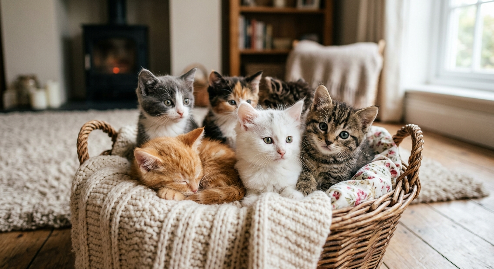

Aqui teremos nossa primeira postagem
Irei compartilhar também um pouco da minha rotinha com os meus 11 Gatos
Por: Nicolly Reis
Bem-vindo ao Tudo Sobre Gatos! aqui você encontra curiosidades, dicas de cuidados, alimentação, saúde e muito mas

Irei compartilhar também um pouco da minha rotinha com os meus 11 Gatos
Por: Nicolly Reis